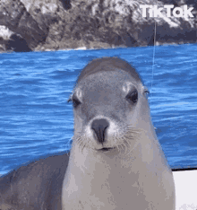
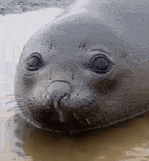

FocaPhotoApp
Versión modificada en español del primer ejercicio de la certificación sobre Responsive Web Design de freecodecampClica sobre la foto para ver más fotos de foquitas
Síes y Noes de las focas |
|
|---|---|
|
Cosas que las focas aman |
|
|
 o jugando entre ellas simulando persecuciones |
|
 |